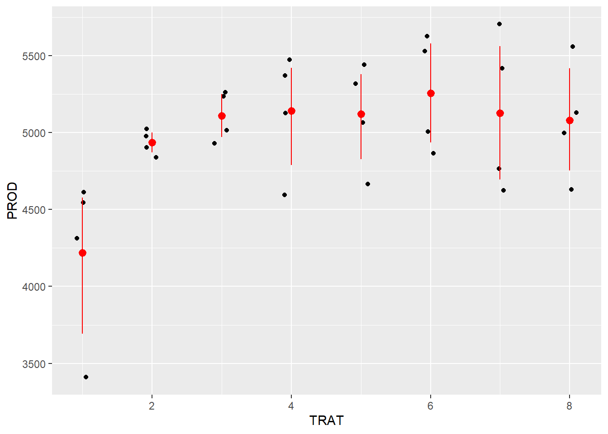
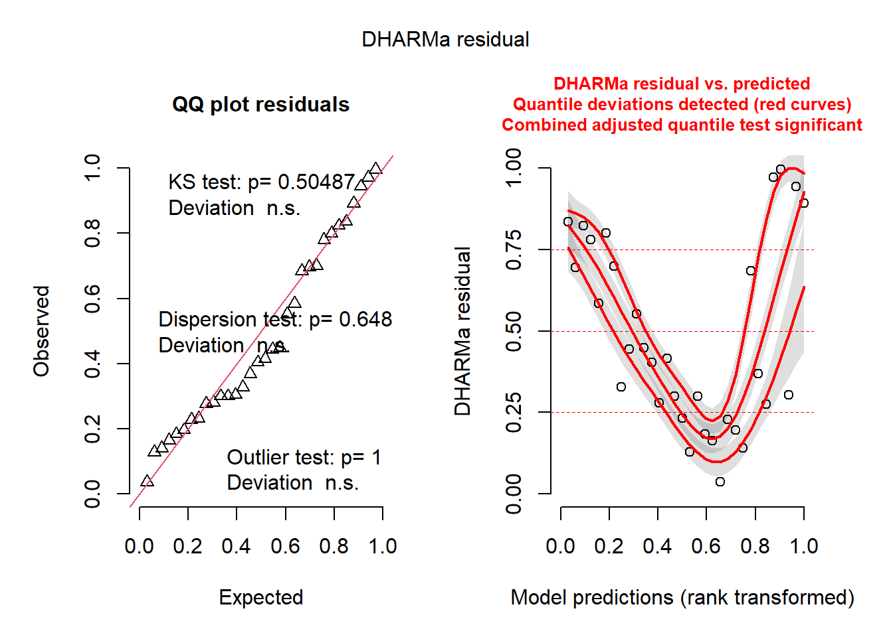
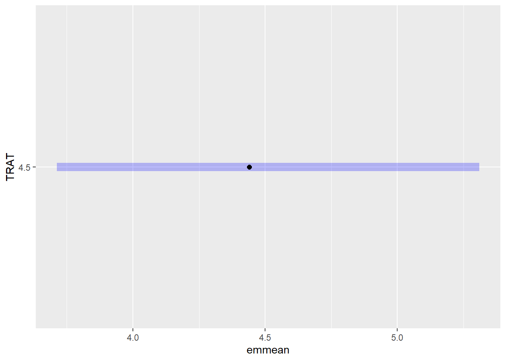
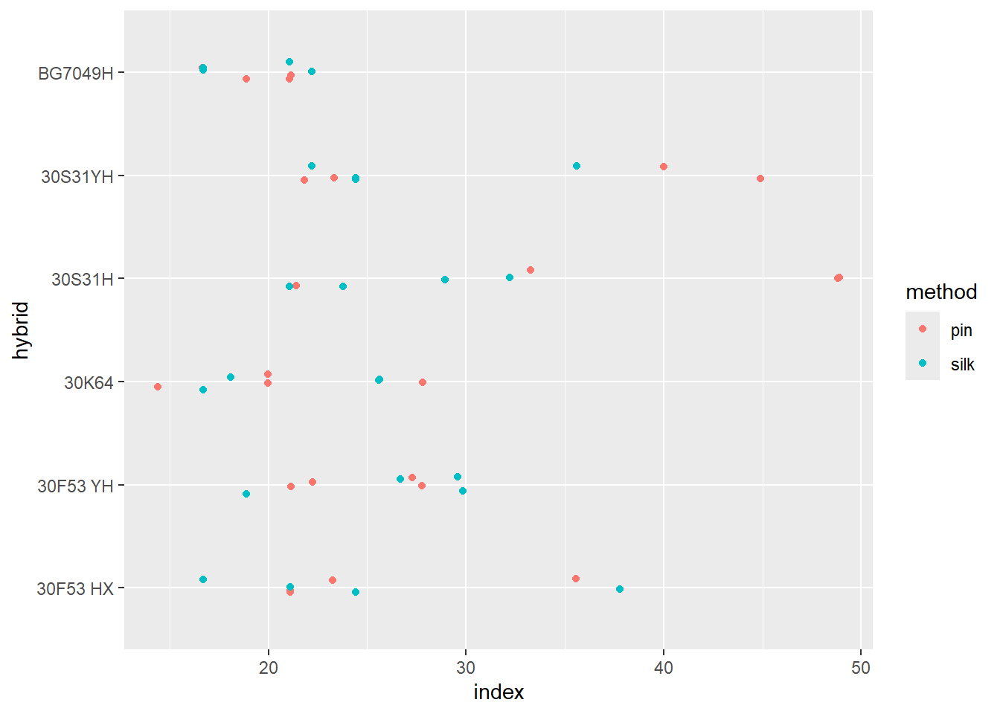
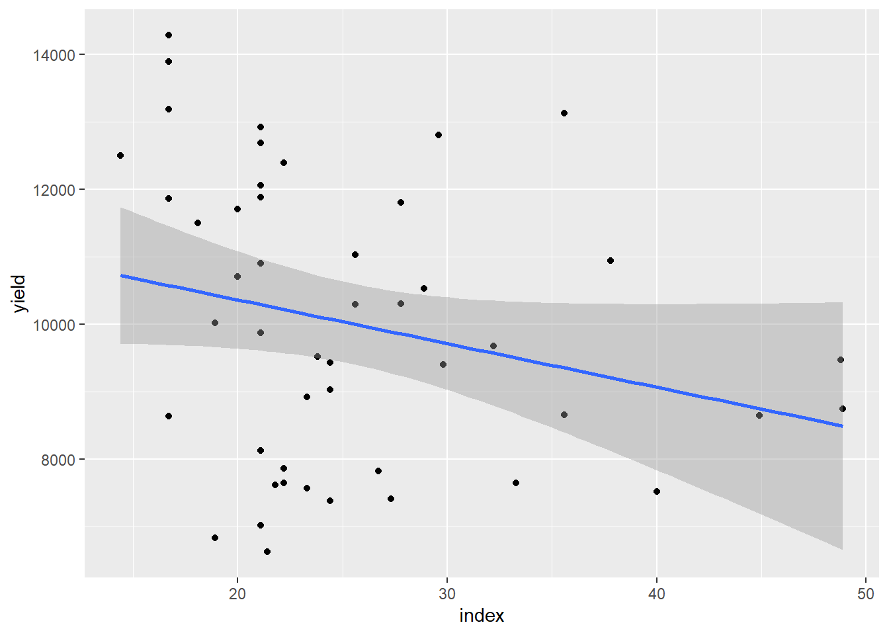
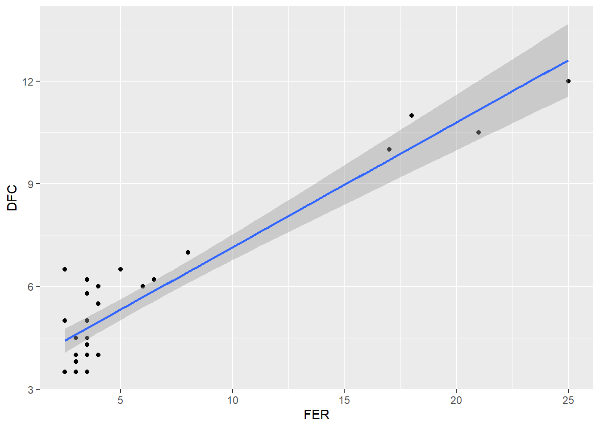

# ───────────────────────────────────────────────────────────────
# Pacotes necessários
library(gsheet)
library(tidyverse)
library(ggplot2)
library(report)
library(rstatix)
library(agricolae)
library(epifitter)
library(car)
library(multcomp)
library(DHARMa)
library(multcompView)
library(emmeans)
library(patchwork)
library(lme4)Aula 5 - Modelos Mistos, Transformações e Correlações
Aula 5 – 30/04/2025
Disciplina: FIP606 – Análise e Visualização de Dados em Fitopatologia
Professor: Emerson Del Ponte
✦ Objetivos da aula:
- Aplicar modelos lineares com blocos
- Interpretar modelos mistos com o pacote
lme4 - Calcular médias ajustadas e fazer comparações múltiplas
- Avaliar resíduos simulados com
DHARMa - Explorar relações entre variáveis por meio de correlações e regressão
# ───────────────────────────────────────────────────────────────
# Análise de experimento em campo (tratamentos x produtividade)
campo <- gsheet2tbl("https://docs.google.com/spreadsheets/d/1bq2N19DcZdtax2fQW9OHSGMR0X2__Z9T/edit?gid=866852711#gid=866852711")
# Visualização inicial
campo |>
ggplot(aes(TRAT, PROD)) +
geom_jitter(width = 0.1) +
stat_summary(fun.data = 'mean_cl_boot', colour = 'red', width = 0.3)
# Conversão de variáveis para fator
campo$TRAR <- factor(campo$TRAT)
campo$BLOCO <- factor(campo$BLOCO)
# Modelo com transformação logarítmica (para FER)
m_campo <- lm(log(FER) ~ BLOCO + TRAT, data = campo)
anova(m_campo)Analysis of Variance Table
Response: log(FER)
Df Sum Sq Mean Sq F value Pr(>F)
BLOCO 3 0.2064 0.0688 0.2825 0.8375
TRAT 1 5.7509 5.7509 23.6174 4.44e-05 ***
Residuals 27 6.5745 0.2435
---
Signif. codes: 0 '***' 0.001 '**' 0.01 '*' 0.05 '.' 0.1 ' ' 1plot(simulateResiduals(m_campo))
# Médias ajustadas
means_campo <- emmeans(m_campo, ~ TRAT, type = "response")
means_campo TRAT response SE df lower.CL upper.CL
4.5 4.44 0.387 27 3.71 5.31
Results are averaged over the levels of: BLOCO
Confidence level used: 0.95
Intervals are back-transformed from the log scale cv.model(m_campo)[1] 33.10603plot(means_campo)
cld(means_campo) TRAT response SE df lower.CL upper.CL .group
4.5 4.44 0.387 27 3.71 5.31 1
Results are averaged over the levels of: BLOCO
Confidence level used: 0.95
Intervals are back-transformed from the log scale
Note: contrasts are still on the log scale. Consider using
regrid() if you want contrasts of back-transformed estimates.
significance level used: alpha = 0.05
NOTE: If two or more means share the same grouping symbol,
then we cannot show them to be different.
But we also did not show them to be the same. pwpm(means_campo) 4.5
4.5 [4.44]
Row and column labels: TRAT
Upper triangle: P values
Diagonal: [Estimates] (response) type = "response"
Lower triangle: Comparisons (estimate) earlier vs. later# ───────────────────────────────────────────────────────────────
# Dados de milho híbrido
milho <- gsheet2tbl("https://docs.google.com/spreadsheets/d/1bq2N19DcZdtax2fQW9OHSGMR0X2__Z9T/edit?gid=1345524759#gid=1345524759")
# Visualização por método e híbrido
milho |>
ggplot(aes(hybrid, index, color = method)) +
geom_jitter(width = 0.1) +
coord_flip()
# Criação de bloco aninhado (modelo misto)
milho$hybrid_block <- interaction(milho$hybrid, milho$block)
# Modelo misto para índice
m_milho <- lmer(index ~ hybrid * method + (1 | block:hybrid_block), data = milho)
car::Anova(m_milho)Analysis of Deviance Table (Type II Wald chisquare tests)
Response: index
Chisq Df Pr(>Chisq)
hybrid 11.4239 5 0.04359 *
method 4.6964 1 0.03023 *
hybrid:method 15.8062 5 0.00742 **
---
Signif. codes: 0 '***' 0.001 '**' 0.01 '*' 0.05 '.' 0.1 ' ' 1plot(simulateResiduals(m_milho))
media_milho <- emmeans(m_milho, ~ method | hybrid)
cld(media_milho, Letters = letters)hybrid = 30F53 HX:
method emmean SE df lower.CL upper.CL .group
silk 25.0 3.57 24.9 17.7 32.3 a
pin 25.3 3.57 24.9 17.9 32.6 a
hybrid = 30F53 YH:
method emmean SE df lower.CL upper.CL .group
pin 24.6 3.57 24.9 17.3 31.9 a
silk 26.2 3.57 24.9 18.9 33.6 a
hybrid = 30K64:
method emmean SE df lower.CL upper.CL .group
pin 20.6 3.57 24.9 13.2 27.9 a
silk 21.5 3.57 24.9 14.2 28.8 a
hybrid = 30S31H:
method emmean SE df lower.CL upper.CL .group
silk 26.5 3.57 24.9 19.2 33.8 a
pin 38.1 3.57 24.9 30.8 45.4 b
hybrid = 30S31YH:
method emmean SE df lower.CL upper.CL .group
silk 26.6 3.57 24.9 19.3 34.0 a
pin 32.5 3.57 24.9 25.2 39.8 a
hybrid = BG7049H:
method emmean SE df lower.CL upper.CL .group
silk 19.2 3.57 24.9 11.8 26.5 a
pin 19.4 3.57 24.9 12.1 26.8 a
Degrees-of-freedom method: kenward-roger
Confidence level used: 0.95
significance level used: alpha = 0.05
NOTE: If two or more means share the same grouping symbol,
then we cannot show them to be different.
But we also did not show them to be the same. # Modelo misto para produtividade
yield_model <- lmer(yield ~ hybrid * method + (1 | block:hybrid_block), data = milho)
car::Anova(yield_model)Analysis of Deviance Table (Type II Wald chisquare tests)
Response: yield
Chisq Df Pr(>Chisq)
hybrid 22.5966 5 0.0004031 ***
method 0.1052 1 0.7456932
hybrid:method 25.9302 5 9.206e-05 ***
---
Signif. codes: 0 '***' 0.001 '**' 0.01 '*' 0.05 '.' 0.1 ' ' 1plot(simulateResiduals(yield_model))
media_milho2 <- emmeans(yield_model, ~ method | hybrid)
cld(media_milho2, Letters = letters)hybrid = 30F53 HX:
method emmean SE df lower.CL upper.CL .group
silk 9988 798 21.1 8328 11647 a
pin 11208 798 21.1 9548 12867 b
hybrid = 30F53 YH:
method emmean SE df lower.CL upper.CL .group
silk 9211 798 21.1 7552 10870 a
pin 9408 798 21.1 7748 11067 a
hybrid = 30K64:
method emmean SE df lower.CL upper.CL .group
silk 10361 798 21.1 8702 12020 a
pin 11675 798 21.1 10016 13334 b
hybrid = 30S31H:
method emmean SE df lower.CL upper.CL .group
pin 8118 798 21.1 6459 9777 a
silk 9185 798 21.1 7526 10844 b
hybrid = 30S31YH:
method emmean SE df lower.CL upper.CL .group
pin 7836 798 21.1 6177 9495 a
silk 8277 798 21.1 6618 9936 a
hybrid = BG7049H:
method emmean SE df lower.CL upper.CL .group
pin 11970 798 21.1 10311 13629 a
silk 12833 798 21.1 11174 14492 a
Degrees-of-freedom method: kenward-roger
Confidence level used: 0.95
significance level used: alpha = 0.05
NOTE: If two or more means share the same grouping symbol,
then we cannot show them to be different.
But we also did not show them to be the same. # ───────────────────────────────────────────────────────────────
# Correlação entre variáveis de desempenho (índice vs produtividade)
milho |>
ggplot(aes(index, yield)) +
geom_point() +
geom_smooth(method = "lm")
cor1 <- cor(milho$index, milho$yield)
cor1 * cor1 * 100[1] 6.323713cor.test(milho$index, milho$yield)
Pearson's product-moment correlation
data: milho$index and milho$yield
t = -1.7622, df = 46, p-value = 0.08468
alternative hypothesis: true correlation is not equal to 0
95 percent confidence interval:
-0.49988704 0.03517829
sample estimates:
cor
-0.2514699 # Correlação em dados de campo
cor(campo$FER, campo$PROD)[1] -0.6258321cor.test(campo$FER, campo$DFC)
Pearson's product-moment correlation
data: campo$FER and campo$DFC
t = 14.049, df = 30, p-value = 9.864e-15
alternative hypothesis: true correlation is not equal to 0
95 percent confidence interval:
0.8635525 0.9664228
sample estimates:
cor
0.9316978 campo |>
ggplot(aes(FER, DFC)) +
geom_point() +
geom_smooth(method = "lm")